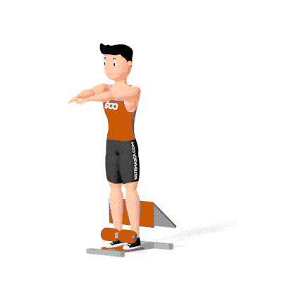

Agachamento Sissy 2

Exercício isolador para fortalecimento e hipertrofia do quadríceps, com ênfase na flexão de joelho e controle de amplitude. Indicado para praticantes de nível intermediário e avançado.
Ficha Técnica
Tipo: Musculação
Grupo Muscular: Perna
Aparelho: Nenhum
Músculos: Nenhum
Como realizar
- Posicione-se na máquina Sissy com os pés firmes nos apoios e coxas apoiadas;
- Mantenha o tronco ereto e abdome contraído;
- Inspire e flexione os joelhos, inclinando o corpo para trás mantendo o quadril estático;
- Desça até a amplitude desejada sem arredondar a coluna;
- Expire e estenda os joelhos retornando à posição inicial;
- Repita conforme prescrição.
 RC STORE
RC STORE